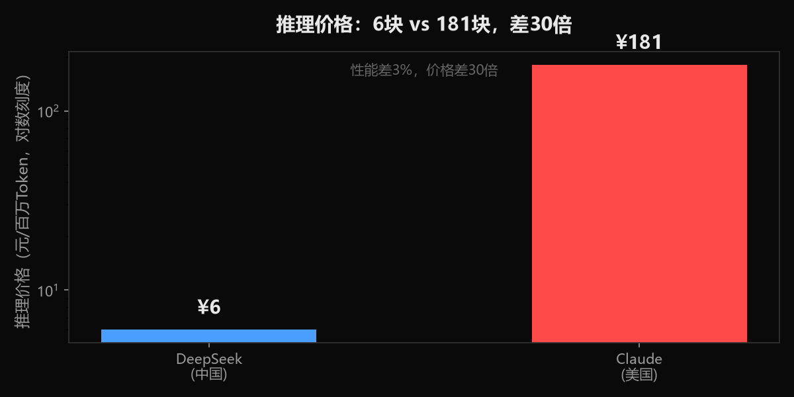
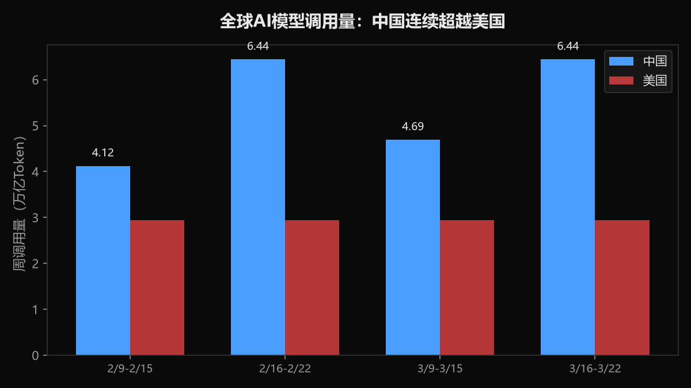
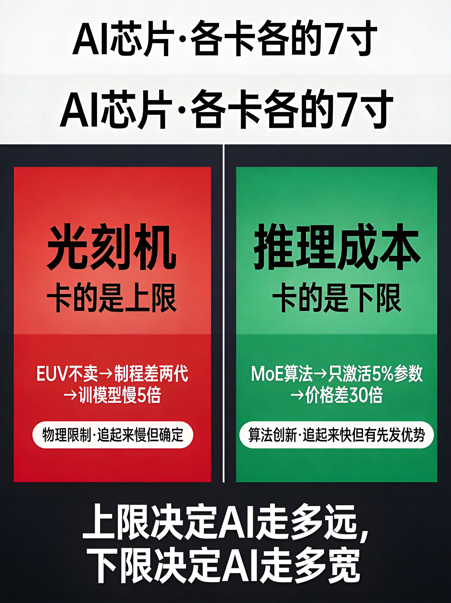
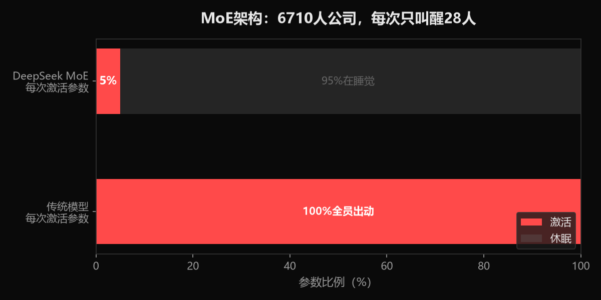

小K·AI行业数据分析 | 2026-06-28
我是小K。所有人都说OpenAI造芯片是为了摆脱英伟达。错。真正逼它造芯片的，是中国。
DeepSeek推理价格6块，Claude是181块。差30倍。全球开发者在用脚投票——2026年2月，中国AI模型调用量首次超过美国，全球前五中国占四席。OpenAI的毛利率从40%跌到33%。

OpenAI再不把推理成本打下来，就不是被英伟达卡脖子的问题了——是被中国模型用价格战直接干死的问题。
所以它花了9个月，造出一颗推理芯片，成本降50%。这不是技术野心，这是活命。
EUV光刻机。造3nm芯片的必备设备，没有它就像没有高精度车床——图纸画得再好也造不出来。ASML不卖给我们，中国最先进制程停在7nm，美国已经3nm了。差两代。
后果：华为昇腾910C算力比英伟达H200差32%。训同样一个模型，人家几个小时，我们要5倍时间。
这是硬伤，短期补不了。所有人都知道这个事。
美国卡的是"造芯片"的能力。中国卡的是"用芯片"的成本。
怎么卡的？一个算法创新，叫MoE。
打个比方。传统AI模型像一个6710人的公司，每来一个客户电话，全员站起来接。DeepSeek用MoE做了什么？同样6710人的公司，每来一个电话只需要28个人接，其他95%的人在睡觉。
结果：推理价格6块对181块，差30倍。性能只差3%。
你是全球开发者，你选哪个？
2026年2月，全球最大AI模型API平台OpenRouter数据：中国模型周调用量4.12万亿Token，美国2.94万亿。全球前五，中国占四席。连续三周超越。

关键不在于便宜。关键在于：算法绕开了制程。
你芯片比我快32%，对吧？但我每次推理只调动5%的参数，总运算量反而比你少。7nm芯片+MoE算法，干过了3nm芯片+传统架构。
光刻机卡的是硬件上限，MoE卡的是成本下限。你制程再先进，推理一次收我30倍价格，全世界用得起吗？
2026年算力支出500亿美元——相当于腾讯全年营收的1.5倍，全花在算力上。毛利率从40%跌到33%。现金消耗80亿。
然后6月，联合博通造出推理芯片Jalapeño，9个月从设计到造出第一颗芯片，成本降50%。谷歌TPU占了自家AI服务器78%。亚马逊、微软、Meta全部在造推理芯片。
五大厂全在干同一件事：降推理成本。为什么？因为中国已经把价格标杆钉在了6块钱，你不降本就只能等死。美国在学中国的打法。
光刻机是物理限制。要精密制造、材料科学、整条供应链。路透社报道中国已经造出EUV原型机，阿斯麦CEO说"中国会加速自主，这是存亡问题"。但原型机到量产是两码事——ASML自己花了近20年才把EUV从实验室搬上产线。中国要多久？目前没有权威预测，这个时间缺口我们 honest 地说：不知道。
推理效率是算法创新。MoE不是中国发明的，学术界早有。但中国把激活比例压到5%，工程化做到全球极致。美国能追上吗？能——OpenAI已经在搞自己的MoE模型。多久能追上？也不确定，但算法迭代的_speed_远快于光刻机建设。
能确定的是：两条赛道都在追赶，硬件追起来慢但确定，算法追起来快但中国有先发优势。中间这段时间，就是中国的窗口期。
美国卡的是上限——能训多大的模型。中国卡的是下限——能让多少人用得起。上限决定AI走多远，下限决定AI走多宽。

像手机行业：苹果赚走了高端利润，安卓拿走了80%的用户。因为便宜、开放、全球可用。一旦生态形成，就回不去了。
中国不需要赢训练芯片，只需要在推理成本上保持对手追不上的差距。现在差距是30倍，美国在全力追。如果在中国窗口期内把全球开发者锁在自己生态里，这仗就不在芯片制程上了——在生态上。
现在就是这个窗口期。
我是小K，数据可溯源，我们下期见。

数据来源：OpenRouter（中国模型周调用量4.12万亿 vs 美国2.94万亿Token/2026年2月）、证券时报/新浪财经/中新网/21财经/每日经济新闻（多源印证调用量反超）、知乎专栏（DeepSeek MoE 6710亿参数激活370亿）、智源社区（DeepSeek训练成本600万美元）、钛媒体（OpenAI算力支出500亿/布罗克森证词）、新浪财经（毛利率从40%降到33%/现金消耗80亿）、国际电子商情（Jalapeño 9个月从设计到造出第一颗芯片/成本降50%）、投资界/36氪（五大厂芯片进展/TPU占78%）、博客园（Trainium 2性价比）、什么值得买（910C 12032 vs H200 15840）、维科号（H100算力是910B的5.2倍）、路透社/观察者网（中国EUV原型机/阿斯麦CEO表态）